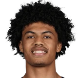

“So I said don’t worry about this one at all. We all know the type of player that you are. Some days are diamonds, some days are stones, and I think it’s something where it’s his first game and those things happen. But I have ultimate confidence in LaMelo,I think he’s going to be a great player in this (league) for many, many years.”

What NBA players and coaches have said about LaMelo Ball
34 quotes about LaMelo Ball from 27 players, coaches and executives, newest first. Each one links to its original source.
Best quotes
Chris Finch on Anthony Edwards playing point guard and Wolves picking up LaMelo Ball:
“In the playoffs it was just double team after double team. We got to get him back to his natural position off the ball. We didn’t create enough catch and shoot threes for him and when you look at the numbers with LaMelo on the floor with his teammates and the efficiency and the production, I mean Kon Knueppel shot 7% higher from the three-point line with LaMelo on the floor than he did without. I mean that’s a massive stat for a great shooter and that’s a big bump for a great shooter.”
NBL Commissioner Jeremy Loeliger said:
“LaMelo’s draft stocks have significantly improved during the course of his season here in the NBL. He has shown his undoubted talent but also developed as a player and a person by spending time in a professional, world class league. Like all NBL Next Stars, we are proud to have played a part in his journey to the NBA and we look forward to maintaining a close association with him as he takes the next steps in his professional career.”
What LaMelo Ball has said about other players and coaches →
Quotes per season
Who talks about LaMelo Ball most
- Chris Finch on LaMelo Ball3 quotes
 Anthony Edwards on LaMelo Ball2 quotes
Anthony Edwards on LaMelo Ball2 quotes Gordon Hayward on LaMelo Ball2 quotes
Gordon Hayward on LaMelo Ball2 quotes- James Borrego on LaMelo Ball2 quotes
- Mitch Kupchak on LaMelo Ball2 quotes
 Tyrese Haliburton on LaMelo Ball2 quotes
Tyrese Haliburton on LaMelo Ball2 quotes Bam Adebayo1 quote
Bam Adebayo1 quote Bismack Biyombo1 quote
Bismack Biyombo1 quote Bob Myers1 quote
Bob Myers1 quote- Charles Lee1 quote
 DeMarcus Cousins1 quote
DeMarcus Cousins1 quote Dennis Smith1 quote
Dennis Smith1 quote
Back and forth
- LaMelo Ball and Anthony Edwards3 quotes
 LaMelo Ball and James Wiseman2 quotes
LaMelo Ball and James Wiseman2 quotes
2026-27
9 quotesChris Finch on playing Ant and LaMelo together continued:
“...You see the TJ (Shannon)/Ayo combos are really, really good. So, you know, we might just double down, play those guys together, but we'll be ready to read it as we go along.”
Jon Krawczynski:Ant on LaMelo:
“He was great tonight. Y'all know. He plays like his hair is on fire. He gets everybody involved. He talked more than I expected throughout the game. That's another big one for me, especially because I love people who talk. Let us know what you see.”
“Anthony loves to root for his teammates; he's a fun-spirited but competitive guy, and we felt (LaMelo) might help lighten the mood around Anthony a little bit. We also felt like Anthony's competitive seriousness could also help LaMelo.”
“I never thought I could develop any point guard skills. I know [coach Chris Finch] harps on me passing the ball, but now we got LaMelo, so I'm happy.”
Jon Krawzynski:Joan Beringer:
“The first time I practiced (with LaMelo Ball) he threw me so many lobs. I’ve never seen that before.”

Joan Beringer on LaMelo BallTwitter @JonKrawczynskiLaVar Ball:
“LaMelo Ball is the most notable player on the NBA. And you know this is your son, you just talking. Well, I'm telling y'all, with this social media, how could he not be? He been in 18 different countries and you got to watch my son grow up on Facebook. So who don't know him?”
Chris Finch on Anthony Edwards playing point guard and Wolves picking up LaMelo Ball:
“In the playoffs it was just double team after double team. We got to get him back to his natural position off the ball. We didn’t create enough catch and shoot threes for him and when you look at the numbers with LaMelo on the floor with his teammates and the efficiency and the production, I mean Kon Knueppel shot 7% higher from the three-point line with LaMelo on the floor than he did without. I mean that’s a massive stat for a great shooter and that’s a big bump for a great shooter.”
Oh No He Didn't: DeMarcus Cousins on where he wants to see LeBron James end up:
“I think Bron in Minnesota with Ant Man would be must watch TV. They added LaMelo Ball who's also another exciting player. You put those three characters together I think we in for some good ball and possibly a championship run”
Peterson said when asked for his message to the fanbase.
“If I'm honest, I love LaMelo. He's a tremendous human being. Of course, he's an enormous talent. He and I have a great relationship.”
2025-26
3 quotesBam Adebayo on LaMelo Ball injuring him:
“I think LaMelo will see it as just another game. He makes like $30Ms a year. The 60 he’s not even gonna see… nobody is going to really know the truth but LaMelo if it was dirty or not”
Erik Spoelstra on LaMelo Ball's trip of Bam Adebayo:
“He should be penalized for that. I don't think that belongs in the game, tripping guys.”
r/CharlotteHornets: Charles Lee on LaMelo Ball coming off the bench:
“Props to him. He wanted to do it. He agreed to come off the bench to allow himself to be there for his teammates (in Q4).He's so competitive—he wants to help us win as much as he possibly can, any way he possibly can.”
2024-25
1 quoteDennis Smith:
“LaMelo Ball doesn’t do anything but play basketball. He’s always in the gym, putting in work. There’ve been nights when I’d come to the gym late, and he’d just be finishing up. Even when he’s playing video games, it’s 2K. He’s all about basketball. People don’t understand how dedicated he is, but I’ve seen it firsthand. Melo is one of those guys who lives and breathes the game. He’s young, but he’s already got that focus and work ethic that sets him apart.”
2023-24
3 quotes“So, in that moment, I already felt like I was the best point guard in the draft,but LaMelo was touted as the number one guy. So, when he got drafted, I was like 'It's gotta be me.'”
In a statement to ESPN, NBA spokesman Tim Frank said:
“Per the (Collective Bargaining Agreement), players are prohibited from displaying commercial logos or corporate insignia on their body or in their hair during games. We try to enforce the rule reasonably, in accordance with its purpose, and taking into account players' efforts to express themselves in a non-commercial manner. But LaMelo Ball's neck tattoo is in obvious violation of the ruleand, accordingly, he's required to cover it.”
Tim Frank on LaMelo BallESPN
“What’s going to make Charlotte more desirable — as much as I like LaMelo, he’s not going to be the primary reason why Charlotte is more desirable — is if we win games and have a winning organization,”
2022-23
2 quotes“I don’t think any of them played like I played. Maybe LaMelo Ball a little bit. But the guys are so good and they can score 30 points every nightso it’s different. I would never score 30,”
HoopsHype: Gordon Hayward on LaMelo Ball injury:
“It sucks, injuries are the worst part about the game. I know that all too well. Already reached out to him, but it sucks and so I feel for him. I feel like we were starting to figure some stuff out a little bit and then another injury.”
2021-22
3 quotesWhat the pair only have in common at this point?–they were both the top players on the Warriors’ radar at the time.
“We targeted James [Wiseman,] obviously we took him in front of LaMelo [Ball],”
“Not being able to showcase the Rookie of the Year in LaMelo Ball to our community was unfortunate,”
Fred Whitfield on LaMelo BallBusiness News
Three time NBA champ and current Australian national team assistant coach Luc Longley on Josh Giddey:
“I think his court vision and his spatial awareness and his understanding of the game is on the same level as LaMelo Ball. I'd be really surprised if he doesn't kick some ass.”
2020-21
12 quotes“Michael lives in Florida; he’s up here quite a bit. He loves to come to practice and watch. He doesn't interfere with the coaches. He doesn't know what the coaches are teaching, so he doesn't want to get on the court and teach something different. But I know he and LaMelo talk and text all the time.”
Rick Bonnell:Hornets coach James Borrego on LaMelo Ball possibly not missing the rest of the season:
“I love the fact that that door is not closed. More for him than for anything.”
Andrew Greif:Ty Lue on LaMelo Ball:
“The things he’s seeing on the floor and just watching tape and watching film on him, he makes some passes that you don’t think most people would seeand he delivers it on time and on target.”
Nick Friedell:Wiseman on LaMelo:
“Smart player, can pass, great team player. He's just a great player all around. He's a 6'7 point guard so you don't find really find that many guards that tall and that much of a playmaker, so he's a great player.”
James Borrego on LaMelo coming through in the fourth quarter and his improved play in clutch time:
“He's a winner. He makes winning plays. That's the best way I can put it.”
Connor Letourneau:Steve Kerr on LaMelo Ball:
“He's not solely responsible, but he's a huge part of them building this identity that they've built already. He's going to be a great player, if he's not already.”
“I was telling LaMelo when I first got to the league I was his age because I came from overseas as well,”
Rod Boone:Doc Rivers on LaMelo:
“I think Ball is showing what he's going to be. He's going to be a terrific player.”
Rick Bonnell:Lonzo Ball on whether he's mentored brother @LaMelo Ball much, regarding the NBA experience:
“Not too much different things you need to tell a kid like that. He's already been in the spotlight for a long time.”
“So I said don’t worry about this one at all. We all know the type of player that you are. Some days are diamonds, some days are stones, and I think it’s something where it’s his first game and those things happen. But I have ultimate confidence in LaMelo,I think he’s going to be a great player in this (league) for many, many years.”
Rick Bonnell:Terry Rozier on @Charlotte Hornets’ LaMelo Ball:
“I’ve never seen a rookie as happy as him.... He lights up the locker room.”
Rod Beard:Tyrese Haliburton on what separates him from other PGs, such as LaMelo Ball and Killian Hayes:
“I feel like I'm the best facilitator in this draft, one of the best shooters and I have a high basketball IQ. But, I'm not one of the guys who makes the decisions on Nov. 18.”
2019-20
1 quoteNBL Commissioner Jeremy Loeliger said:
“LaMelo’s draft stocks have significantly improved during the course of his season here in the NBL. He has shown his undoubted talent but also developed as a player and a person by spending time in a professional, world class league. Like all NBL Next Stars, we are proud to have played a part in his journey to the NBA and we look forward to maintaining a close association with him as he takes the next steps in his professional career.”